Path of Leash Resistance
Your human is glued to their phone and walking on autopilot. You are on the other end of the leash, and you have errands of your own.
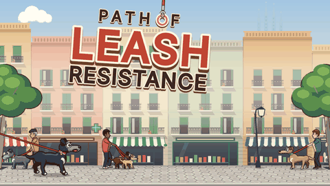
Free. No ads, no purchases, no account. Keyboard, controller or touch.
What you do
Steer the autopilot
Steady tension guides where your phone-glued human drifts. Yank too hard and their patience runs out in a telegraphed correction — unless you plant first.
Use grip, slack & poles
Your human outweighs you four to one in a straight tug. Dig in to hold ground, snap taut mid-reel, grind ledges for combos, or wind round bollards to whip them clear.
Clear errands before the gate
Mark lamp posts, sniff bushes, haul dropped snacks, herd stray cats, outrun street sweepers and reach the off-leash gate with the phone intact.
On the walk
- The leash is real rope physics: wrap it around poles, dig in, win the tug of war
- A human who answers the leash: a steady pull leads them, constant hauling runs out their patience
- Forty-six hand-built walks through Barcelona and a tutorial, in any weather, by day or at night
- Seven dogs, each with a skill and a skill goal of her own
- Buried finds to sniff out, and training to spend on her stats
- Every walk ends off the leash, with agility, tug-of-war and a frisbee
- Goal lists on every walk, with stars that unlock new walks
- A dare-giver on every walk, each with their own tune
- Leash tricks: pole swings, figure eights, threading the needle, ledge and handrail rides
- Nine chase walks: the street sweeper, the river flood, the clinic escape, the wild boars, the correfoc, the Dimoni float, airport security, the runaway snow groomer and the mountain goats
- Four statue boss fights: El Mamut the stone mammoth, Els Lleons the twin bronze lions, El Drac the mosaic salamander, and El Gat a bronze cat the size of a car
- Dog moods: scared, barky, zoomies and flat, each changing how you move and what you notice
- Ground you can feel: grass and mud hold scent, sand drags, wet ground and snow skid
- Other dogs and their people with lives of their own: they sniff, mark, greet and tangle
- Nine skies and six times of day that change how each walk plays
- Bones to spend on collars, bandanas and coats
- In English, Catalan and Spanish, with screen shake, flashes, text size and controls all adjustable
- Full controller support, and a three-part tutorial for new players
- No ads, no purchases, no account, and it plays offline
What's new
- Three new walks, forty-two in all. Sarrià, the old village at first light, where the bells of Sant Vicenç ring the hour. El Metro, down out of the rain for one stop at rush hour. And Carrer de Blai, Poble-sec's pintxos street at night, where your human says "Leave it!" to every dropped pintxo.
- A new look, Trencadís: saffron, turquoise and magenta on deep navy, with new fonts on every screen.
- El Barri, Plaça Reial and L'Estació rebuilt: flower-tile pavements and zebra crossings, arcades lit at night, and a station café with commuters surging at every train call.
- A dare-giver on every walk, each moving and with a tune of their own. Dares now show what counts: the zoomies are free while a dare runs, and the poles and trees to swing round are ringed.
- The whirl, upgraded: wind your human round a pole and they fly out flat like a tetherball, whooshing round faster and faster, then FLING!
- The leash, upgraded: coils loop round the trunk, the leash takes your collar's color, clips to her harness and runs into a reel in your human's hand.
Forty-seven main walks across five chapters
Plus First Walk at the start of the leash. Pick any walk for its place notes, screenshots and goals.
Chapter 1
12 walks · Ends on boss: La Ciutadella (El Mamut)
 TutorialFirst WalkLearn the leash, trick by trick
TutorialFirst WalkLearn the leash, trick by trick
 El BarriThe little park down your street
El BarriThe little park down your street
 La RamblaThe crowded promenade
La RamblaThe crowded promenade
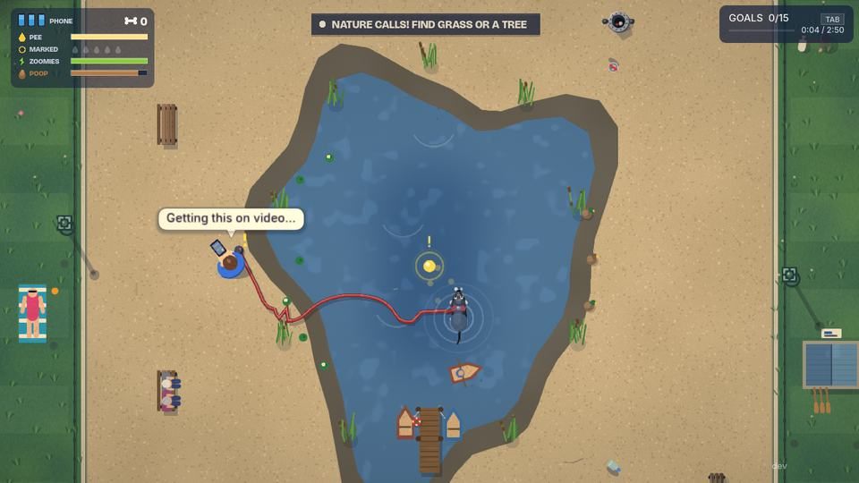
El ParcThe city park and its duck pond Windy, dawnPasseig MarítimThe beachfront promenade
Windy, dawnPasseig MarítimThe beachfront promenade
 ChaseClear, dawnLa NetejaThe city's dawn clean-up
ChaseClear, dawnLa NetejaThe city's dawn clean-up
 El GòticThe old town alleys
El GòticThe old town alleys
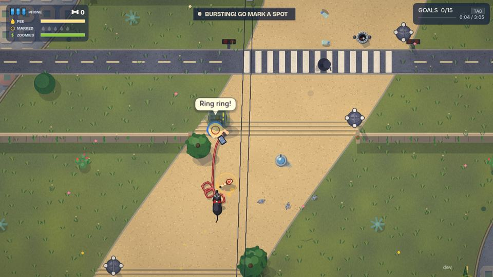
MontjuïcThe winding climb to the castle El MercatThe market hall at opening time
El MercatThe market hall at opening time
 Rain, dayEl DiluviA shopping street in a downpour
Rain, dayEl DiluviA shopping street in a downpour
 ChaseStorm, dayEl BesòsThe river park that floods
ChaseStorm, dayEl BesòsThe river park that floods
 BossLa CiutadellaThe old citadel and its mammoth
BossLa CiutadellaThe old citadel and its mammoth
Chapter 2
10 walks · Ends on boss: El Mosaic (El Drac)
 Windy, dayPlatja de LlevantThe dog beach at the coast's end
Windy, dayPlatja de LlevantThe dog beach at the coast's end
 L'EixampleThe grid of cut corners
L'EixampleThe grid of cut corners
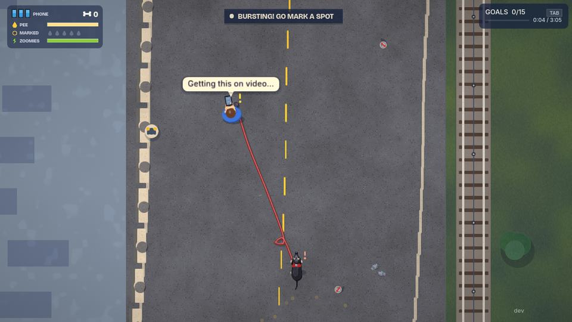
Fog, morningEl TibidaboThe hilltop fairground ChaseEl VeterinariA trip to the vet
ChaseEl VeterinariA trip to the vet
 Clear, dawnSarriàThe village the city swallowed
Clear, dawnSarriàThe village the city swallowed
 El BoscA winding woodland trail
El BoscA winding woodland trail
 Els ÀngelsThe skate plaza by the museum
Els ÀngelsThe skate plaza by the museum
 Clear, nightLa CastanyadaThe chestnut festival
Clear, nightLa CastanyadaThe chestnut festival
 ChaseEls SenglarsA wild Collserola downhill
ChaseEls SenglarsA wild Collserola downhill
 BossEl MosaicMosaics and stone columns
BossEl MosaicMosaics and stone columns
Chapter 3
7 walks · Culminates at El Fòrum
 Clear, morningLa SuperillaThe car-free green superblock
Clear, morningLa SuperillaThe car-free green superblock
 Rain, dayEl MetroRush hour, one stop on the metro
Rain, dayEl MetroRush hour, one stop on the metro
 L'EstacióRush hour at the train station
L'EstacióRush hour at the train station
 Clear, duskEls BúnquersThe sunset lookout over the city
Clear, duskEls BúnquersThe sunset lookout over the city
 Clear, nightPlaça ReialThe arcaded square off La Rambla
Clear, nightPlaça ReialThe arcaded square off La Rambla
 ChaseClear, nightLa CremadaBadalona's devil-burning night
ChaseClear, nightLa CremadaBadalona's devil-burning night
 Windy, dayEl FòrumThe solar pergola by the sea
Windy, dayEl FòrumThe solar pergola by the sea
Chapter 4
7 walks · Ends on boss: El Port (Els Lleons)
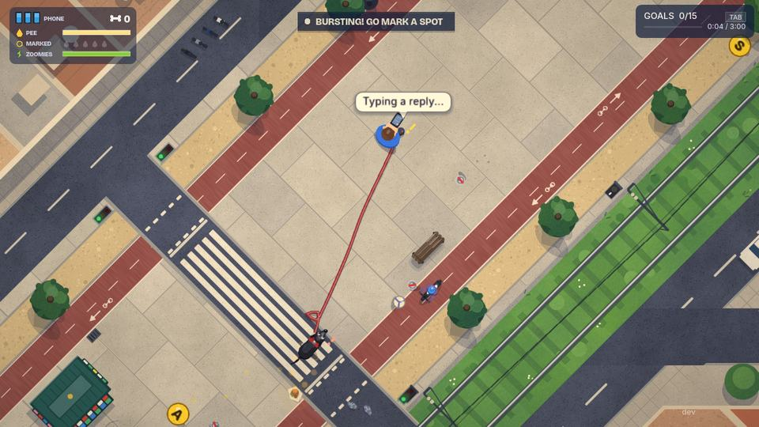
La DiagonalThe avenue that cuts the grid Clear, nightCarrer de BlaiPintxos, and food on the floor
Clear, nightCarrer de BlaiPintxos, and food on the floor
 La Carretera de les AigüesThe old water road on the hill
La Carretera de les AigüesThe old water road on the hill
 ChaseClear, nightFesta de GràciaA festival of decorated streets
ChaseClear, nightFesta de GràciaA festival of decorated streets
 Drizzle, dayEl Laberint d'HortaThe cypress maze
Drizzle, dayEl Laberint d'HortaThe cypress maze
 ChaseSnow, dayLa MolinaSki slopes and a runaway groomer
ChaseSnow, dayLa MolinaSki slopes and a runaway groomer
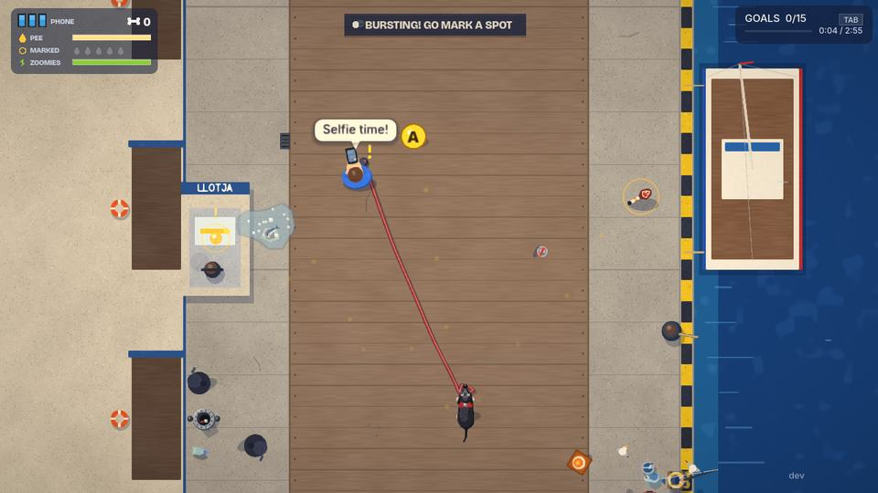
BossEl PortThe fish auction on the wharfChapter 5
12 walks · Ends on boss: Rambla del Raval (El Gat)
 Clear, nightPlaça d'EspanyaMagic fountains below the palace
Clear, nightPlaça d'EspanyaMagic fountains below the palace
 Clear, duskSant PauThe modernista hospital gardens
Clear, duskSant PauThe modernista hospital gardens
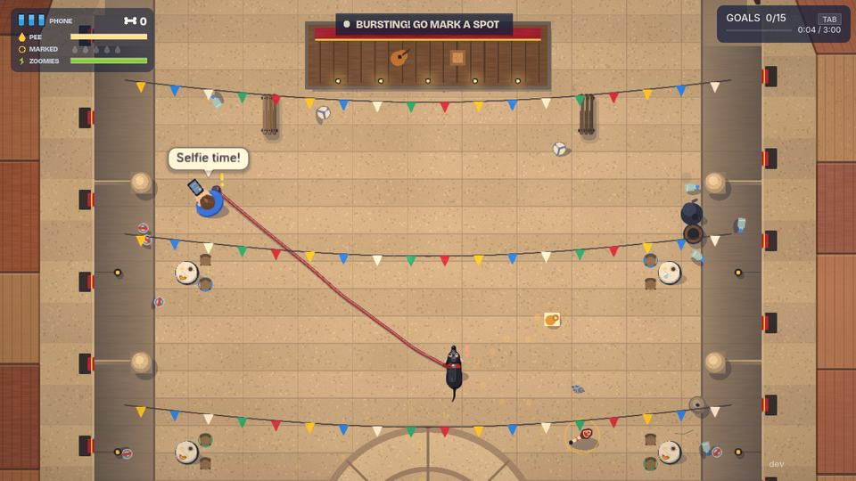
El Poble EspanyolA walled village of copied towns Windy, daySitgesWhitewashed streets by the sea
Windy, daySitgesWhitewashed streets by the sea
 ChaseL'AeroportAirport security on your tail
ChaseL'AeroportAirport security on your tail
 Les ObresA detour through the roadworks
Les ObresA detour through the roadworks
 Windy, dayCamí de RondaThe cliff path above the coves
Windy, dayCamí de RondaThe cliff path above the coves
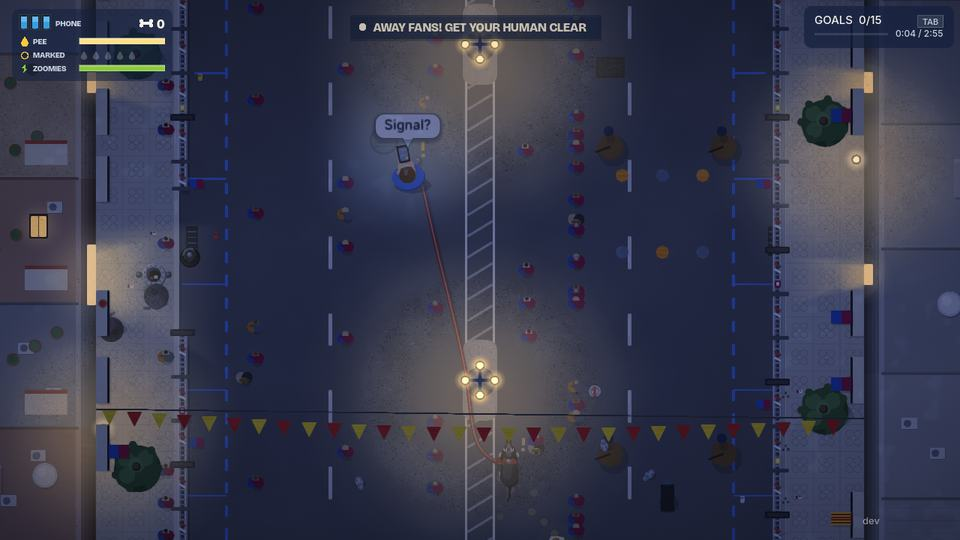
Clear, nightDia de PartitMatch day at the stadium La FerrallaThe junkyard after closing
La FerrallaThe junkyard after closing
 ChaseMontserratMountain paths and loose goats
ChaseMontserratMountain paths and loose goats
 Rain, dayEls EncantsThe flea market at Glòries
Rain, dayEls EncantsThe flea market at Glòries
 BossClear, nightRambla del RavalWhere the big bronze cat sits
BossClear, nightRambla del RavalWhere the big bronze cat sits
The four bosses
Four chapters end with a Barcelona monument stepped down from its pedestal to settle the score with your leash.
 Chapter 1 bossEl Mamut (La Ciutadella)The life-size stone mammoth by Parc de la Ciutadella's cascada steps off its plinth. Wrap it up or bait its charge into the boating lake.
Chapter 1 bossEl Mamut (La Ciutadella)The life-size stone mammoth by Parc de la Ciutadella's cascada steps off its plinth. Wrap it up or bait its charge into the boating lake.
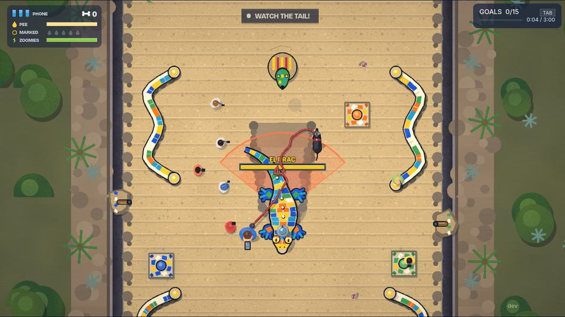
Chapter 2 bossEl Drac (El Mosaic)The trencadís mosaic dragon holds the grand stairway. Wind the leash round the stone columns, dodge the tail sweep, and trip the beast on the tiles. Chapter 4 bossEls Lleons (El Port)Twin bronze harbor lions guard Columbus's column along the wharf. Lead their pincer charge round the iron mooring bollards and into one another.
Chapter 4 bossEls Lleons (El Port)Twin bronze harbor lions guard Columbus's column along the wharf. Lead their pincer charge round the iron mooring bollards and into one another.
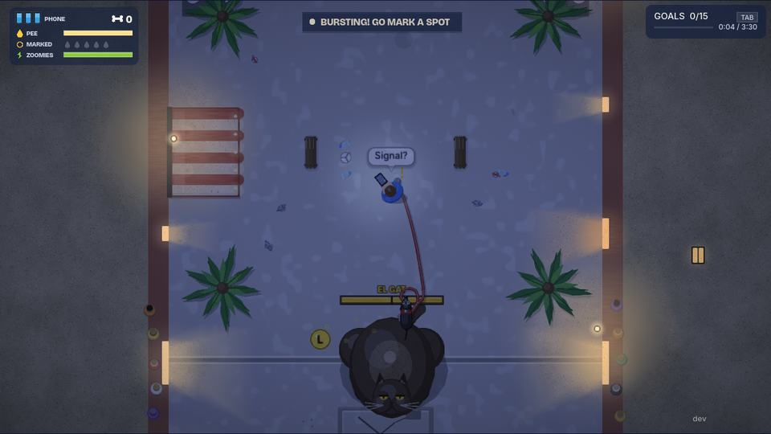
Chapter 5 bossEl Gat (Rambla del Raval)Rambla del Raval's plump bronze cat prowls beneath the palms, scattering pigeons and leaping across awnings until you fling your human straight into him.The chases
Nine walks flip at the gate: reach the turnaround and the whole run home becomes a chase.

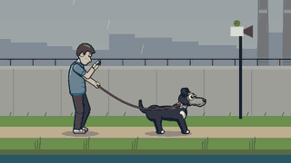


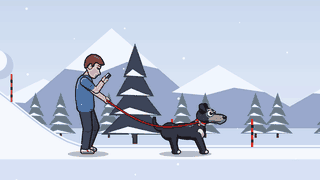


- La Neteja
- El Besòs
- El Veterinari
- Els Senglars
- Festa de Gràcia
- La Cremada
- L'Aeroport
- La Molina
- Montserrat
Seven dogs
Millie walks with you from the start; the stars you earn unlock six more. Each moves, pulls and plants her own way, and each has a skill with a goal of her own on every walk.
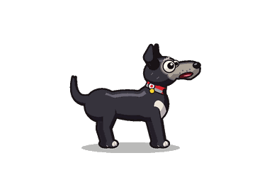
Millie
StarterMongrel · Balanced
Jack of all trades, master of sniffs
The nose Sniff out and dig up a buried find
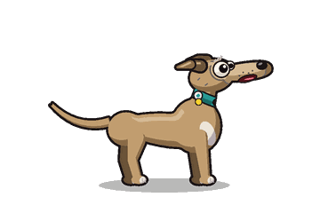
Pipa
15 starsGalgo · Fast, weak plant
A lightning sighthound who hates digging in
The sprint Sprint flat out for 2 seconds

Mochi
25 starsFrench bulldog · Plants hard, slow
A stubborn little tank who refuses to budge
The plant Dig in and trip your human 2 times

Bruna
35 starsGos d'atura · Herds your human, collects muck
A shaggy sheepdog who steers your human with ease
The herd Herd your human for 5 seconds
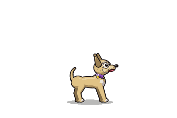
Tito
45 starsChihuahua · Slips through gaps, easily reeled in
A tiny chihuahua who slips between obstacles and reels in fast
The squeeze Slip through 3 gaps only you fit

Perla
55 starsRatonero bodeguero · Digs anything up, quick on her feet
A tricolor ratter from the bodegas who digs faster than anyone
The dig Dig up 2 holes
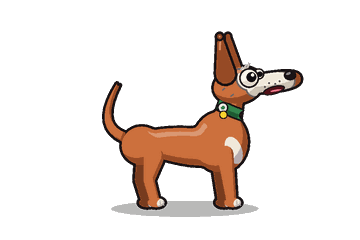
Duna
65 starsPodenco · Leaps benches, long stride
A red and white podenco who clears a bench from standing
The leap Leap 2 benches
Wardrobe, training & New Look
Spend bones between walks on collars, bandanas, coat markings and skills, or roll a New Look for your human.
Collars
Sets the color of the leash itself.
Bandanas
Optional cloth around the neck (5 colors).
Coats
Six coat markings (6 styles).
Training & New Look
Every buried find she digs up and every skill goal she meets is a training point for her. Spend them on 5 stats (Speed, Plant, Herd, Agility, Nose), up to 5 levels each; a level costs as many points as the level it reaches. Roll a New Look for your human before heading out: 6 skin tones, 6 hair colors, 4 + 4 hairstyles, 8 shirts, 5 trousers and 4 shoe styles.